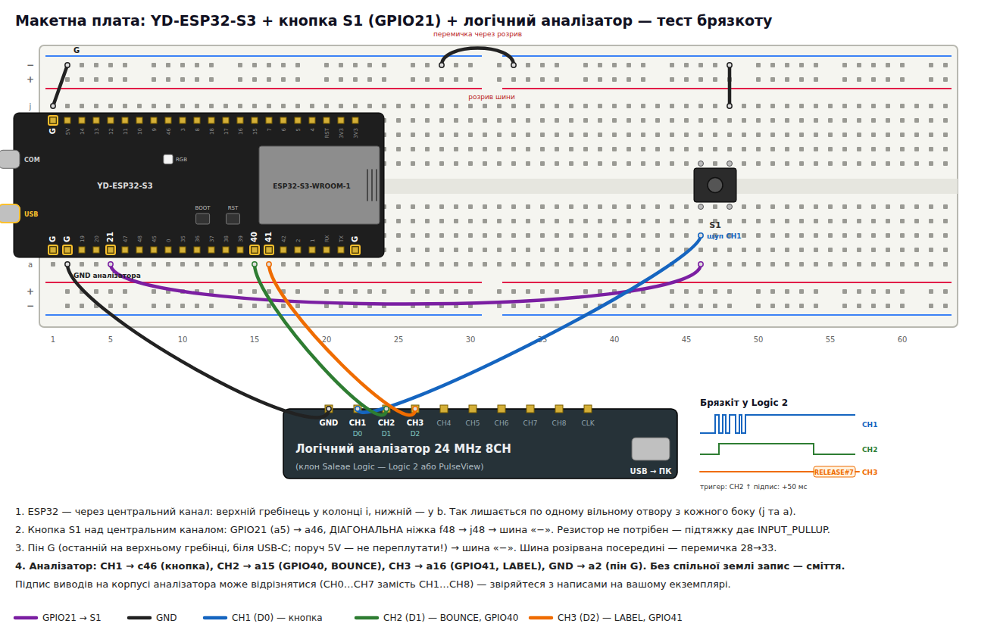

Частина уроку 1.5 · Осцилограф, кнопка і брязкіт · також до уроку 2.4
Конспект на справжніх даних: кнопка на GPIO21, логічний аналізатор і 190 подій, які записав ESP32-S3 на уроці. Натисніть кнопку в анімації, перегляньте кожну подію у віртуальному аналізаторі, з'ясуйте, чому переривання губить фронти, і виберіть антибрязкіт для своєї кнопки.
Металеві контакти пружні: при зіткненні вони відскакують, як м'ячик, і кілька разів розмикаються, перш ніж зупинитися. Час уповільнено приблизно в 1000 разів.
Головне: натискання людини триває ~100 мс, а брязкіт — мікросекунди–мілісекунди. Око цього не бачить, а переривання ESP32 бачить: кожне розмикання — це ще один фронт і ще одне спрацювання.
Кнопка на GPIO21 з внутрішньою підтяжкою, аналізатор слухає той самий провід, а прошивка видає ще два допоміжні сигнали для аналізатора.
| Аналізатор | Куди | Що показує |
|---|---|---|
| CH1 (D0) | c46 → GPIO21 | сам контакт кнопки — «правда» з брязкотом |
| CH2 (D1) | a15 → GPIO40 | BOUNCE: HIGH від другого фронту події — тригер лише на брязкіт |
| CH3 (D2) | a16 → GPIO41 | LABEL: UART 115200, текст події через ~50 мс |
| GND | a2 → G | спільна земля — без неї запис є шумом |

Кожна подія відновлена з часів фронтів, які записало переривання ESP32 на уроці (11:40, мікросекунди). Виберіть подію на мінікарті, кнопками або ← →. Клацніть по осцилограмі двічі — отримаєте курсори A/B і Δt.
Це погляд переривання: фронти, коротші за ~3 мкс, ISR зливає в один. Там, де стоїть позначка «загублено», справжній аналізатор на CH1 покаже щонайменше на один імпульс більше.
Спрощена модель: після фронту ISR стартує із затримкою; фронти, що прийшли за цей час, зливаються з першим. Аналізатор на 24 MS/s розрізняє імпульси від ~42 нс.
Кожна точка — подія з брязкотом (чисті події з одним фронтом брязкоту не мають). Шкала логарифмічна. Клацніть точку — вона відкриється в аналізаторі. Посуньте вікно антибрязкоту.
Умова — як на курсі, стенд — як на уроці: кнопка на GPIO21 замість GPIO16 (у коді змінено лише #define). Позначайте виконані кроки — прогрес зберігається в браузері.
cd esp32-s3-bounce-test && pio run -e homework -t upload && pio device monitor#include <Arduino.h> #define BUTTON_IN 21 // в умові — 16 volatile uint32_t button_counter = 0; uint32_t last_count = 0; void IRAM_ATTR button_isr() { button_counter++; // +1 на КОЖЕН спадаючий фронт } void setup() { pinMode(BUTTON_IN, INPUT_PULLUP); Serial.begin(115200); attachInterrupt(digitalPinToInterrupt(BUTTON_IN), button_isr, FALLING); } void loop() { if (button_counter != last_count) { last_count = button_counter; Serial.print("Button Pressed! Count: "); Serial.println(last_count); } delay(10); }
«Лічильник FALLING» — скільки разів код з умови додав би 1 за цикл «натиснув → відпустив», порахований за фронтами, які побачило переривання. Колонка «Аналізатор» — для ваших чисел з Logic 2 (спадаючі фронти на CH1 за той самий цикл); їх збережено лише у вашому браузері.
Спершу відповідайте самі, потім розгортайте. Числа — з вашого запису на уроці.
Ні, у двох напрямках одночасно. Лічильник з умови показав би ≈156 на 91 натискання — тобто більше, ніж натискань. Але й менше, ніж фронтів на аналізаторі: у 30 подіях парність фронтів не зійшлася, отже ISR злила щонайменше один короткий імпульс із сусіднім.
Для чистої події (1 фронт) числа збігаються завжди — розбіжності з'являються лише там, де є брязкіт.
Пропускає — коли імпульс брязкоту коротший за реакцію переривання (≈3 мкс у вашому записі: найкоротший виміряний інтервал — 3 мкс, 16 інтервалів коротші за 10 мкс). Два фронти потрапляють в одне спрацювання. Подивіться розділ 4 — посуньте «Найкоротший імпульс» нижче за «Затримку ISR».
Перераховує зайве — коли рахує не натискання, а спадаючі фронти. У вашої кнопки натискання майже завжди чисті, зате 38 % відпускань брязкотять: на шляху LOW→HIGH контакт кілька разів замикається знову, і кожне замикання — це FALLING. Ще 8 разів контакт «блимнув» під час утримання пальцем. Звідси ≈156 замість 91.
Серед подій з брязкотом (без двох аномалій > 10 мс): середня ≈ 0,46 мс, медіана ≈ 0,18 мс, 90 % — коротші за 1,27 мс, максимум — 3,56 мс (відпускання, 6 фронтів). Натискання: брязкіт лише 1 раз із 91 (10 мкс).
Аномалії 27,9 мс і 51,7 мс — не брязкіт контакту, а повторний дотик/ковзання пальця: між фронтами там десятки мілісекунд.
Найдовший брязкіт — 3,6 мс. З запасом ×3 (нова кнопка зноситься, інша партія брязкотить довше) — ≈ 10 мс — мінімум, на практиці беруть 20–30 мс: людина не помітить затримки менше ~50 мс. Перевірте в розділі 5: при 10 мс усі звичайні події вміщаються у вікно.
Важливо як фільтрувати: не «ігнорувати 30 мс після першого фронту», а «прийняти рівень, якщо він стабільний 30 мс» (так зроблено в esp32-s3-led-button, kDebounceMs = 30). Такий фільтр ловить і брязкіт відпускання, і «блимання» під час утримання.
Брязкіт є не в кожному натисканні, а триває мікросекунди — на записі в кілька секунд його не видно. Тому лабораторна прошивка (pio run -e lab) дає аналізатору підказки.
Два запущені Logic 2 сваряться за пристрій («USB Permissions» у лозі = ресурс зайнятий). Якщо POW горить, а пристрою немає — це кабель або роз'єм (error −71), не драйвер.
Клацніть Channel 0/1/2 → BUTTON, BOUNCE, LABEL. Частота — 24 MS/s, тривалість — 1–10 с.
Trigger → Channel 1 → rising ↑. Чисті натискання запис не запускають; брязкіт — одразу перед точкою 0 на Channel 0.
Колесо миші над точкою 0, доки шкала не покаже мкс. «Гребінка» з вузьких імпульсів — це брязкіт. Ширину імпульсу показує підказка при наведенні.
Analyzers → + → Async Serial: Channel 2, 115200. Вкладка Terminal покаже RELEASE#7 e=4 972us; у Data-таблиці працює пошук MISSED.
Timing Markers (лінійка праворуч): від першого до останнього фронту — тривалість брязкоту. Порівняйте з рядком у Serial Monitor.
Без лабораторної прошивки (код з умови) CH2/CH3 мовчать — тоді тригер ставиться на Channel 0, а брязкіт шукається вручну: rising ↑ для відпускання (у вашої кнопки брязкотить саме воно), falling ↓ — для натискання.
Чотири питання за матеріалом. Відповідь видно одразу.